The Word 2000 Interface 4
What Page View Should I Use 5
Moving Around in a Document 6
Some Important Things First 7
Using the Formatting Toolbar 10
The Formatting Toolbar Chart 11
Using the Format Painter to Format Text 14
Using the Spell Checker 17
Setting the Left Tab Marker 20
Using the New Line Command 21
Setting the Center and Right Tab Markers 22
Setting Tabs and Using Dot Leaders 23
Creating a Table with the Insert Table Button 26
Adding Columns and Rows to a Table 27
Adding a Formula to a Table 28
Merging Cells in a Table 29
Deleting Rows and Columns 30
Calculating Net Profit 32
Working With Columns and Breaks 34
Working With Columns and Breaks Part 2 35
Using Columns and Breaks and Page Setup 37
Inserting Photos into a Document 41
The Best Word Shortcuts 44
250 Microsoft Word Shortcuts 45
Neat Tricks in Word 2000 47
Microsoft Word is part of the “suite” of applications called Microsoft Office. Microsoft Office clearly has the largest market share for integrated office applications at a whopping 79% (according to PC Data). The 2 largest competitors, Corel and Lotus come in at a very low 6% and 4% respectively.
Microsoft Word is a very user friendly and stable word processing application. This series of lessons presents a variety of information about Microsoft Word from the basics to the advanced. It by no means covers all there is to know, but it does cover the basics of a lot of topics.
You may be a new user of Microsoft Word, or you may be an experienced user. There will be something here for everyone. Work through the parts of this training packet that you think will benefit you most. You may start at the beginning of this packet and work through it or, if you know some of the information in the packet, skip it and do those sections that you do not know.
There is an accompanying floppy disk that you will need for many of the lessons. If the lesson begins with “Open the file…,” then you know to use the floppy disk to begin the lesson.
On Page 53 Addendum - some topics that have been added since the first printing. Topics covered are:
When to Save and when to Save As
Insert Mode and Overstrike Mode
How to Save a File (on a Floppy Disk and on the Hard Drive)
Two Features in Word You Want to Use
And as usual, if you have questions or comments, just holler! Have a great training session.
There are several areas that make up the Word 2000 interface. Find these areas on your monitor screen and be familiar with them as we will use them in this training.
|
|
Menu Bar-gives options for working with documents
|
|
Standard Toolbar-buttons for opening, saving, closing, and printing files and more….
|
|
Formatting Toolbar-used for formatting text with different fonts, sizes, and colors and more…
|
|
Ruler-used to help with cursor position, tabs, and indents. In Print View, there is a also vertical ruler along the right hand side.
|
|
Text area-the insertion point is where text is typed. In Page View, you can see the text boundaries. More on this later.
|
|
Status Bar-gives position of the insertion point and other information on the current document. Can you figure out what the other information is?
|
|
What Page View Should I Use
For this lesson, open the file: Sample Text.doc
There are 4 page views to choose from: Normal, Web Layout, Print Layout, and Outline.
Click on View in the menu bar to select each view.
Try each of the views and read below what they are used for.
Normal view is a good view if you just want to type text. It does not show the page margins like Print Layout view.
Web Layout view only is used if you are creating a web page.
Print Layout view actually show the left and right margins of the page as well as the top and bottom margins of the page. A note about Print Layout view: You will want to have the text boundaries showing if you use this view (they probably already are). Follow these steps to show the text boundaries:
Click on Tools in the menu bar, then select Options.
Click on the Views tab and then click on Text Boundaries (place a checkmark () in the box)
Outline view is only used if you are making an outline.
USING THE MOUSE TO SELECT THE VIEW
You can also choose which view you want to use by clicking on the
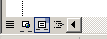
views buttons. They are located in the lower left hand corner

of the screen, to the left of the horizontal scroll bar.
Place the cursor over each without clicking to see the name of each view button. Click on the one that you want to use.
Moving Around in a Document
Text in Word 2000 is always entered at the insertion point. Open up the file: Sample text.doc
Below are some ways to move the insertion point around in your document. Try each of these ways
LEFT ARROW Moves the insertion point one character to the left
RIGHT ARROW Moves the insertion point one arrow to the right
UP ARROW Moves the insertion point one line higher
DOWN ARROW Moves the insertion point one line lower
HOME Moves the insertion point to the beginning of the line
END Moves the insertion point to the end of the line
CTRL + HOME Moves the insertion point to the beginning of the document
CTRL + END Moves the insertion point to the end of the document
CTRL + Left Arrow Move left to the beginning letter of each word
CTRL + Right Arrow Move right to the beginning letter of each word
PAGE UP Moves the insertion point one screen up
PAGE DOWN Moves the insertion point one screen down
Some Important Things First
What if I make a mistake?
As you are working, you will undoubtedly make mistakes. If you make a mistake, you can Undo the mistake by clicking on the Undo button in the Formatting Toolbar, or by pressing Ctrl-Z. You may also click on the Edit Menu and select Undo. This is a neat way to Undo because it tells you there what you are undo-ing. Sometimes, you may have made a series of mistakes and you need to do the Undo several times. In fact, you can Undo yourself all the way back to the very beginning.
Now, if you Undo something, or several things, and you decide that you actually didn't want to Undo those thing, you can Redo them. Just click on the Redo button in the Formatting Toolbar or press Ctrl-Y. And like Undo, you may also click on the Edit Menu and select Redo. You can Redo as many times as you want (just like you can Undo as many times as you want.
Keep Undo and Redo in the forefront of your mind. (I couldn't live without them!)
Is there more than one way to do a task?
Yes, in Microsoft Word, there are usually many ways to do the same task. For example, you may be able to use the Menu Bar (sometimes called a drop-down menu) to do a task, or you may be able to click on a toolbar, or you may be able to press a series of keys (sometimes called keyboard shortcuts). Learn all the ways to do a task and then use the one that is easiest for you.
When do I click once and when do I double-click?
You always click just once unless it specifically says to double-click. The more experienced you get with Word, the more you will learn that in many cases, it is faster to double-click to accomplish a task than single-click.
When do I right-click and when do I left-click.
You always left-click unless it specifically says to right-click. Whenever you right-click, a pop-up menu always appears on the screen which gives you options and the ability to do something.
You can if you want to. It might be a good idea to save your work both on the floppy disk and on the hard drive so that you learn how to do it. If you need help, holler.
What if something pops on my screen and I don't know what it is?
That's what the Esc (Escape) key is for - just press it once. You problem may be solved.
I really wanted to learn how to do _ _ _ _ _ _ in Microsoft Word, but its not in the training packet?
Just ask me what you want to learn. I have resources for just about anything you would want to learn and I will give it to you. (Mail merge, making labels, printing envelopes, …..)
How do I remember all this stuff?
You don't the first time you do it (or the 2nd, 3rd, 4th…). Like anything else, the more you practice, the better you get and the more you remember.
One last thing, there is a real possibility (make that probability) there may be some mistakes in the training material. If you find one, let me know so that I can correct it. Microsoft Word catches a lot of mistakes - but it doesn't catch them all!
Open the file: Sample Text.doc. Read the text below and do the PRACTICE exercises below using the file you just opened.
Selecting Text means that you highlight the text. This text is selected
You need to select text to make any changes to the text.
Often, it has been suggested that users should type up their documents first, and then format the text to meet their own needs. Word processors allow you to select, or highlight, text to make editing or formatting changes to it.
PRACTICE----------------------------------------------------------------
Here are the methods of selecting text using both the mouse and the keyboard. TRY EACH
Select text using the mouse: Click-and-drag across the text you want to format.
To select a single word: Place the cursor on the word you want to format and double-click
SHIFT-Click to select a series of words: Click to the left of the first word you want to begin with, then, while holding down the SHIFT key, click to the right of the word you want to end with.
To select a sentence: Hold the [CTRL] key and click the sentence.
You can also use SHIFT with the four arrow keys to select text: Hold down the SHIFT Key and then push the left or right arrow keys (or the up and down arrow keys) to select the text.
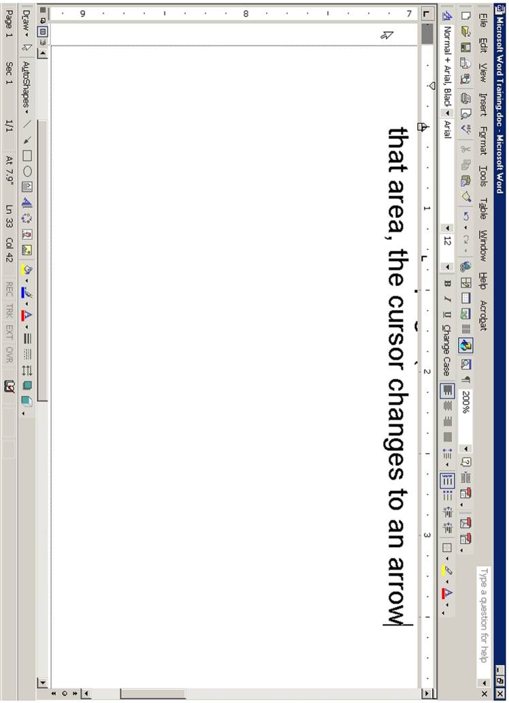
Use the Selection Bar to select text. The selection bar is the area in the left-hand border of the page (to the left of the text on the screen).
When you move the mouse in that area, the cursor changes to an arrow.
Place the cursor in the selection bar area and click to the left of the line that
you want to select.
If you want to select several lines, click in the selection bar area and drag down (or up) to include all the lines you want.
So, which method do you use? Any method - use whichever is best for that situation.
There are 15 to 20 toolbars in Microsoft Word (depending on your version of Word and how many add-ons you have installed). The 2 most important and most used toolbars are the Standard Toolbar and the Formatting Toolbar. Look at the top of the screen just under the Menu Bar and you will see those 2 toolbars.
To show or hide the toolbars, you click on the View menu and select Toolbars. The toolbars with a check mark are currently visible on the screen. Simply click on a toolbar to either show it or hide it. Try clicking on some of the toolbars.
Remember that you always want to show the Standard Toolbar and the Formatting Toolbar.
Toolbars can be moved to the top of the window, the bottom of the window, or to the left or right side of the window. To move a toolbar, place the cursor on the dim vertical line on the left side of the toolbar. When you get a cursor that has vertical and horizontal double arrows, click and drag the toolbar to the desired location. Try it. It will be a little awkward at first, but practice a little bit until you get the hang of it.
The toolbars that you will most frequently use (besides the Standard Toolbar and the Formatting Toolbar) are the Picture Toolbar, the Drawing Toolbar, and the Tables and Borders Toolbar.
Another way (a very convenient way) to show and hide toolbars is to use the right-click method. Try this. Right-click at the top of the screen and to the right of one of the toolbars. You will see a pop-up menu appear. Just click on any of the toolbars that you want to show or hide.
We will do some exercises using the Formatting and Standard Toolbars.
Using the Formatting Tool Bar
Using the chart The Formatting Toolbar, format the text below. Remember, to format text, you must first select it (highlight it by dragging over it).
Open the file on the floppy disk: Using the Formatting Toolbar. Format the text in each line. Use The Formatting Toolbar chart on the next page to find which button to click on
Make this line of text in italics.
Underline this line of text.
Change this line of text to red.
Change this line of text to 18 point.
Change this line of text to a different font.
Center this line of text.
Right justify this line of text.
Indent this line of text.
Put a bullet in this line of text.
Number this line of text.
Highlight this line of text.
Put a border around this line of text.
Double space this line of text.
Make this line of text Bold, Italics, Underlined, Red and with a border.
THE FORMATTING TOOLBAR - Chart
Select text by holding down the mouse cotton and dragging over it with the mouse.
Example: This is selected text
|
The Standard Toolbar provides a convenient and easy way to do a wide variety of tasks. The Standard Bar on the computer you are looking at right now may look slightly different because the toolbar can be customized. Icons can be added or deleted according to your preference. But here is a basic toolbar with an explanation about what each icon is used for.
Study the icons, try some of them, and use them in your word processing.
Function of commonly used buttons
|
|
Creates a new blank document based on the default template
|
|
|
|
Saves the active file with its current file name, location and file format
|
|
Prints the active file - for more print options go to the File menu and select Print
|
|
Print preview - Shows how the document will look when you print it.
|
|
Spelling, grammar and writing style checker
|
|
Cut - Removes the selection from the document and places it on the clipboard
|
|
Copy - Copies the selected item(s) to the clipboard
|
|
Paste - Places the content of the clipboard at the insertion point
|
|
Format painter - Copies the format from a selected object or text and applies to other objects or text
|
|
Undo - Reverses the last command, use pull-down menu to undo several steps
|
|
Redo - Reverses the action of the Undo button, use the pull-down menu to redo several steps
|
|
Displays the Tables and Borders toolbar
|
|
Insert a table into the document, or make a table of selected text
|
|
Insert an Excel spreadsheet into the Word document
|
|
Columns - Changes the number of columns in a document
|
|
Displays or hides the Drawing toolbar
|
|
Zoom - Enlarge or reduce the display of the active document
|
Open the file: How To Make Iced Tea
Use the Formatting Toolbar to format the memo. Remember, you must always select the text before applying the format.
Select the heading: How To Make Iced Tea
Bold the heading, underline it, center it. make it red and make it 18 point.
Bold and italicize the words: Date, To, From, and RE.
Indent the word Ingredients. Bold it, underline it and make it red
Add a bullet to the Ingredients list (water, tea, sugar and ice). Hint: Select all 4 ingredients at once before you click on the bullet button.
Indent the word Directions. Bold it, underline it and make it red
Number the Directions list. Hint: Select all 4 directions at once before you click on the numbering button.
Center the bottom line: Enjoy your iced tea! Also, italicize it, make it blue, bold it, make it 18 point, change the font to Rockwell, and put a border around it.
When you are finished with all the formatting, print it.
Using the Format Painter to Format Text
Open the file: You Are Invited to a Party
Format the text according to the instructions below. Remember, you must always select the text before formatting it.
Press Ctrl-A to select all the text. Click on the Center button in the Formatting Toolbar.
Bold the title: You Are Invited to a Party. Also, make it red, change the font to Rockwell, make it 18 point, and put a border around it.
Bold the word: Date: Also, underline it and make it red
Be sure the word Date: is selected and then double-click on the Format Painter icon in the Standard Toolbar. (It is the icon that looks like a paint brush).
Notice that your cursor changes into paint brush.
Now, you are going to “paint” over the other headings: Time, Place What to Bring, and Schedule. Just drag the paint brush over those words - carefully. As you drag over each work, the word takes on the formatting of the original word (Date).
Now select the words: December 31, 2002. Bold it and make it blue.
Once again, turn on your Format Painter by double clicking on it. Paint (drage over) all the rest of the text which is under the headings Time, Place, What to Bring, and Schedule. Hint: when you have 3 lines of text (such as is under Place and What to Bring), you can drag over all 3 lines at the same time.
Select the 3 lines under the heading: What to bring and Number these lines
Select the 4 lines under the heading: Schedule. Place a bullet in these lines.
Print a copy of your formatted file.
Open the File: Cut and Paste
In this document, you will cut the answer on the right side and paste it in the correct line on the left side.
Select the text cold feet. (Hint: It is easier if you place the cursor to the right of cold feet and click and drag toward the left).
Cut the selected text. There are 3 ways to cut the text:
(1) Click on the Scissors icon in the Standard Toolbar.
(2) Press Ctrl-X (the keyboard shortcut for Cut).
(3) Click on the Edit menu and select Cut.
Use one of these methods to cut cold feet.
Place the cursor to the right of line #1 (When you are afraid you have).
Paste the selected text. There are also 3 ways to paste the text:
(1) Click on the Paste icon in the Standard Toolbar.
(2) Press Ctrl-V (the keyboard shortcut for Paste).
(3) Click on the Edit Menu and select Paste.
Used one of these methods to paste cold feet in line #1.
Continue cutting and pasting each of the answers on the right side to the correct line on the left side.
Copying text is similar to cutting text except that when you copy selected text, you leave the original text in place and copy the text in the desired location.
There are 3 ways to copy text:
(1) Click on the Copy icon in the Standard Toolbar.
(2) Press Ctrl-C (the keyboard shortcut for Copy).
(3) Click on the Edit menu and select Copy.
Open the file: Drag and Drop
In this lesson, you will drag the road sign names at the top to the correct road sign icons below.
Select the first road sign title, Railroad Crossing.
Place the cursor over the selected text so that the cursor changes to a white arrow.
Hold down the mouse button while dragging the text to the Railroad Crossing icon (in the right hand column). When you see a small vertical line appear just to the right of the icon, release the mouse button.
Continue dragging the road sign titles to the correct icons. If the icon is not visible (it is below the bottom edge of the window), drag the text toward the bottom of the screen and the screen will start to scroll downward.
Drag and drop all the titles to their respective icons.
Copying with Drag and Drop.
If you hold the Ctrl key down while you drag selected text, you will leave a copy of the text in its original position. Try it.
Open the file Using the Spellchecker
You will use the Microsoft Spell Checker to check the spelling of this memo. As you look at the document, words that are underlined in red are misspelled words. Words that are underlined in green are grammatical errors. The Spell Checker will find both misspelled words and grammatical errors.
Click on the Spelling and Grammar icon in the Standard Toolbar.
The Spell Checker dialog box appears. The top part of the dialog box shows the misspelled word in red. The bottom part of the box shows a list of suggested words. The right side shows several actions that can be taken.
If the correct spelling of the word is in the suggested list, click on the word and click on Change. (You can also click on Change All if that word is used more than once in the document).
If the correct spelling of the word is NOT in the Suggestions box, you may change the misspelled word in the upper box yourself by deleting the word and retyping it correctly. After correcting the word yourself, click on Change.
If you know a word is not misspelled, for example, a person's name, click on Ignore. You may also click on Ignore All if that word is used in the document more than once.
You may add any word that is not in the dictionary (that doesn't show up in the list of suggestions) to the dictionary by clicking on Add. (Just be sure that the word is typed correctly!)
You may add any word to the Auto Correct feature by clicking on Auto Correct. (Auto Correct is a feature that automatically corrects some words as you type them. For example, if you type the word adn, Word will change it to and automatically.)
Continue checking the entire document until you get to the pop-up box that says. The spelling and grammar check is complete.
You are not finished! The Spell Checker does not find every error in your document. In this document, there are incorrectly used words that the Spell Checker did not find. You always need to proofread a document to find words that may not be misspelled but are not used correctly in the context of the document. Can you find the incorrectly used words?
Open the file: Using the Thesaurus
Use the Thesaurus to change selected words in the memo.
Double click on (select) the word “main” in the first paragraph. Click on the Tools menu, point to Language and then click on Thesaurus (Notice that you can also use the shortcut SHIFT-F7). Select the word “primary” and click on Replace.
Replace the word “injured” in the first paragraph with “harmed” using the steps in Step 1. (Paragraph 1)
Replace the word “concern” in the second paragraph with the word “consideration” using the right-click method.
Right-click on the word cash, point to Synonyms, and select the word “money.” (This is a shortcut to using the Thesaurus.)
Replace “warmth” with “heat.” (3rd paragraph)
Replace “continuously” to “constantly.” (3rd paragraph) using any of the methods described above.
Open the file: Inserting Clipart
In the lesson, you will learn how to insert clip using the Microsoft Office Online website. This website is specifically designed to be used with Microsoft Office applications and contains thousands of graphics and clipart. Follow the instructions to add clipart to the document.
To insert a picture into your file, do the following:
In the Menu Bar, click on Insert
Type in the name of the picture that you want to search for in the upper right hand corner box just to the left of the green arrow.
Press on the Green Arrow.
Put the mouse on the picture you wish to use and click on the down pointing arrow.
Click on Add to Selection Basket
Click on Download 1 Item located in the blue bar just above the pictures
Right-Click on the picture and select Copy
Close the Window (Click on the X or press Alt-F4)
Click on your file in the Task Bar at the bottom of the screen.
Click the mouse to the right of the sentence or word where you want to graphic to appear.
Click on the Paste button
Make the picture smaller if it is too big. To make the picture smaller, click in the middle of the picture to select the picture. Handles will appear in the corners and sides of the picture. Then place the mouse on the “handle” in the lower right hand corner of the picture and when the cursor changes in a diagonal line with double arrows, click and drag the picture until it is the size that you want.
The layout of the picture can be formatted in several ways. To see the layout options, right-click on the picture and select Format Picture. Click on Layout. Choose the layout that you want (experiment with them).
Setting the Left Tab Marker
Be sure the Ruler is showing. If it is not showing, click on view and click on Ruler.
The Tab Markers are located in the small box to the left of the ruler. When you click on the box, you cycle through each tab marker as illustrated below.
Follow these directions to set left tab markers and then type the names and titles below.
Click on the Tab Marker box to the left of the ruler until the left tab marker is showing.
To set the left tab, click the mouse on the ruler at 2 inches mark. Also, click the mouse on the ruler at the 4 inch mark.
Type the following names and titles using those tab settings. Press TAB before you type each name and after you type each name. Press Enter at the end of each line.
Shirley Blanchette Training Supervisor
Paul Simpson Trainer Specialist
Mary Johnson Trainer Specialist
Lucille Jorgenson Trainer Specialist
Tiffany Tillemans Administrative Assistant
Select all the names you just typed. Very carefully, move the 2 inch tab marker to the one inch mark. Move the 4 inch tab marker to the 3 inch mark. If you move the tab marker off the ruler, your will lose it - be careful!.
Notice that you have to select the text in order to move the marker and the text to a different place.
Setting the Left Tab Marker - Part 2
Using the New Line Command
Set a left tab marker at 2 inches and set one at 4 inches.
Type the names and job titles below. At the end of each line, hold down the SHIFT key and press enter. Do this at the end of each line. This is called New Line Command.
Shirley Blanchette Training Supervisor
Paul Simpson Trainer Specialist
Mary Johnson Trainer Specialist
Lucille Jorgenson Trainer Specialist
Tiffany Tillemans Administrative Assistant
Click in the middle of any name. Move the 2 inch tab marker to the 1 inch mark.
4. Click in the middle of any job title. Move the 4 inch tab marker to the 3 inch
mark.
5. Notice that when you use the New Line Command you DO NOT have to select
the text in order to move the marker and the text to a different place. Just click
anywhere in the text and move the marker.
Setting the Center and Right Tab Markers
1. Type TRAINING DATES AND COSTS at the top of the page. Center it and bold it.
2. Press Enter 2 times and click on the Align Left button in the Formatting
toolbar. Also take off Bold
3. Set a left tab at the 0.5 inch mark.
Set a center tab at the 3.5 inch mark.
Set a right tab at the 5.5 inch mark
Type the following using the tab markers you just set.
Management September 12 $110
Documentation Training September 23 125
Using the Internet October 7 120
Sending E-mail October 14 100
Principals of Commerce October 23 85
4. Select all the text you just typed.
5. Hold down the ALT key and click on the 3.5 inch tab marker and move it to the 3.3 inch mark.
6. Hold down the ALT key and click on the 5.5 inch tab marker and move it to the 4.7 inch mark.
Setting Tabs and Using Dot Leaders with the
You can use the Tabs Dialog box to set tabs. You must use the Tabs Dialog box if you wish to use dot leaders. Follow these instructions carefully to set up the tabs for the text below.
1. Type: Table of Contents. Center and Bold it.
2. Press Enter 3 times. Click on Align Left button in the Formatting Tool Bar and take off bold.
3. Click Format in the Menu Bar and click on Tabs. Click on Clear All. Click on Left.
4. Click in the small white box just below Tab Stop Position. Type: 1 - Click Set.
5. Type: 5 - Click on Right in the Alignment section. Click on 2 in the Leader Section. Click Set.
6. Click OK (or press Enter)
7. Type the text below. Be sure to press TAB before each entry and press enter after each line.
Teleconferencing Basics 3
Telephone Line Interface 48
1. You will learn how to insert symbols into your document in this lesson. Read through the directions and then type the letter at the bottom of the page.
2. When you get to the word “Tomás,” NOTICE that it has an accent about the a. Type only the first 5 letters of the name (Tom) and then click on Insert, and select Symbols.
3. Click on the little up arrow next to the Font dialog box. Select the normal text font or the Times New Roman font.
4. Look for the letter a with the accent above it (á). Click on it. Click on Insert and click on Close.
5. Continue typing the paragraph adding symbols in the same manner when you get to them.
6. When you get to the last line and have to look for the symbol of the globe ( ), you must change to font to Webdings. (Do the same for the airplane ().
6. When you get to the smiley face at the end, use the font calle Lucida Console.
---------------------------------------------------------------------------------------------------
SUBJECT: Visit to Marshall
The city of Marshall, Minnesota, is located in Lyon County. It has a population of about 12,735 people. Marshall is located 150 miles southwest of Minneapolis/St. Paul and 90 miles northeast of Sioux Falls. The coldest month of the year in Marshall is January. The hottest (☼) is August with the average temperature of 87° to 89°. The average snowfall in Marshall is 35 inches. The city of Marshall comprises an area of 7.5 square miles. For recreation Marshall has ►seven city parks, ►a golf course, ►a bowling alley and a ►movie theater. Marshall also has an outdoor Aquatic Center that has three pools and a water slide. The airport is on the outskirts of town (). Towns surrounding Marshall include Minneota, Redwood Falls and Granite Falls. Marshall is one of the best small towns on the globe. ( ) I hope you enjoy your visit. B
---------------------------------------------------------------------------------------------------
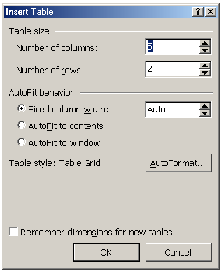
To create a table, click on Table in the menu bar, point to Insert and click Table. The Insert Table dialog box will appear.
Select the number of columns and rows you want by either clicking on the up or down arrows or by just typing in the number in the box.
For the table below, select 3 columns and 6 rows.
Type the information below in the table you have created. Be sure to center and bold the text in the first row.
NOTE: To move from cell to cell, use the TAB key. To move backward from cell to cell, use SHIFT-TAB.
To move within a cell, use the left and right arrow keys.
To move up or down a row, use the up and down arrow keys.
Resizing and centering the table.
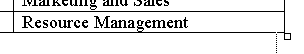
To resize the table (make it smaller), place the cursor in the lower left hand corner of the table (the last cell) - do not click the mouse.
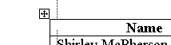
A small square will appear - place the cursor over that square and click and drag the table to the left, so it is smaller - make it about one inch smaller.
To center the table, (move into the center of the paper), you must select it first. Place the cursor in the first cell (up left-hand corner) of the table. A small box will appear with a cross sign in it. Click on this box.
The table is selected. Now click on Center in the Formatting Tool Bar. (NOTE: You can also select the entire table by clicking on Table in the menu bar, point to Select and click on Table).
NOTE: You may also center the table by clicking anywhere in the table, selecting Table Properties from the Table menu, and clicking on center. Try it.
Creating a Table with the Insert Table Button
You will used the Insert Table button on the Standard Toolbar to create a table.
Type the title, Meyer Electrical Corporation. Center and bold it. Press Enter twice
Type the sub-title, Human Resource Department. (Center and bold it). Press Enter 3 times.
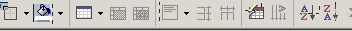
Click on the Insert Table button
in the Standard Toolbar.
Hold down the left mouse button.
This causes the grid to appear. Move the mouse pointer down and to the right until the number below the grid displays as 6 x 2 and then release the mouse button.
Type the information below in the cells. Use the TAB key to move from cell to cell. Use the Shift-TAB to move backward from cell to cell.
Use the instructions on the previous page to resize and center the table.
MEYER ELECTRICAL CORPORATION
Adding Columns and Rows to a Table
Open the file: Adding a Column to a Table. (It will look similar to the first two columns in the table below).
Make the following changes to the table to add a row and a column to the table.
Position the mouse in any cell in the first row. Click on Table in the Menu Bar, point to Insert and then click on Rows Above
In the first cell of the new row, type the word Name. In the 2nd cell of the new row, type the word Title.
Add a column to the table.
Position the mouse in any cell in the second column. Click on Table in the Menu Bar, point to Insert and click on Columns to the Right.
In new column, type the following information in the cells beginning with the top cell:
Make the table smaller and center the table on the page. Click on the vertical grid lines to adjust the column size of the table.
Center and bold the top row headings (Name, Title and Ext.).
ADDING A FORMULA TO A TABLE
Start a new document. Click on Table in the menu bar
Click on Insert - then click on Table.
Number of Rows - 7. Click OK.
Click on the vertical line between the 5th and 6th row and move it to the left to shorten up the last column.
Click on the vertical line between the 4th and 5th row and move it to the left to shorten up the 5th column.
Shorten the other column columns in the same way. The widest column should be the 1st column.
Type the chart in the table.
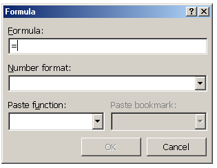
Calculate the Totals in Each Row
Click in the first blank cell under Total.
Click on Table in the menu bar, then click on
Formula. Delete the formula but leave the equals sign.
Click on the down arrow in Paste Function. Select Sum.
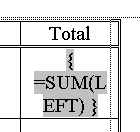
Type LEFT between the parentheses.
(It may be there already).
Click OK.
If the formula is showing,
right-click here and choose
Repeat above steps for each row - calculate the total each Row.
1. Start a new Blank Document. Create a table with 3 columns and 10 rows
You will use the Table Markers in the ruler to change the width of the columns. Click the mouse in any cell in the table.
Hold down the ALT key and position the mouse over the Move Table Column marker in the ruler.
Click and drag to change the width of the first column to 2.5 inches,
Click and drag to change the width of the 2nd column to 2 inches.
Click and drag to change the width of the 3rd column to 1 inch.
4. Place the mouse in the first cell all the way to the left so that the cursor changes to an upward arrow.
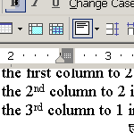
5. Double-click to select the row. Click on Table in the menu bar and click on Merge Cells. (Note: You can also click on the Merge Cell button in the Tables and Borders tool bar ).
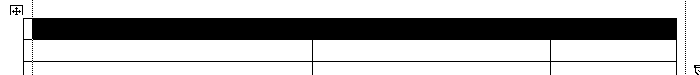
You can also select a row by dragging the mouse over the cells in the row as show below.
Merge the cells in the 2nd row in the same way.
Complete the table by typing the following:
In the first row, type: PERSONNEL AND HUMAN RESOURCES DEPARTMENT
In the 2nd Row, Type: Microsoft Word Training
In the 3rd row type Full Name in the first column, Section in the 2nd column,
and ID # in the 3rd column.
Select the 3rd row and shade it with a light grey. Use the Shading Color button in the Tables and Borders toolbar to select the color.
DELETING ROWS AND COLUMNS
Open the file on your floppy disk Deleting Rows and Columns. The file has 12 names in the table.
Position the cursor anywhere in the last row in the table (Heather Harris).
Click on Table, point to Delete, and click on Rows. The bottom row is deleted.
Position the cursor anywhere in the row that contains the name Kevin Arondo.
Click on Table, point to Delete, and click on Rows.
Delete the row that contains the name June Oda in the same way.
Position the cursor in any cell in the middle column.
Click on Table, point to Delete, and click on Columns
In the first paragraph, change the word twelve to nine
In the first paragraph, delete the words employee ID number and also delete the 2 commas before and after the words.
Open the file on the floppy disk called Averaging Test Scores.
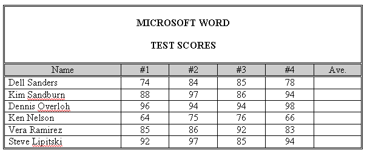
Position the cursor in cell F3.
Click on Table and then Formula
Delete the formula in the Formula text box
except the equals sign
With the cursor positioned immediately after the equals sign, click on the down-pointing triangle to the right of the Paste function text box.
At the drop-down menu, click on AVERAGE.
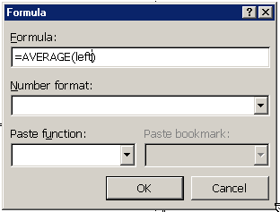
With the cursor position between the parenthesis, type the word left.
Click the down-pointing triangle to the right of the Number format text box and then click the fifth option from the top (0%) at the drop-down list
Click OK (or press Enter).
Postion the Cursor in cell F4 (just below the cell you were just in) and press the F4 key (NOTE: It's an F key in the top row on the keyboard - F4). This is called the Repeat Command key.
Position the cursor in cell F5 and then press F4.
Position the cursor in cell F6 and then press F4.
Position the cursor in cell F7 and then press F4.
Position the cursor in cell F8 and then press F4.
In this lesson, we will be using some keyboard shortcuts to do some tasks like Center, Bold, Align Right, etc.
Start with a new blank document. Press Enter once. Create a table with 4 columns and 6 rows
Select the entire first row and merge the cells
Position the cursor in the first row and press Enter once.
Press Ctrl-E (This centers the cursor in the row). 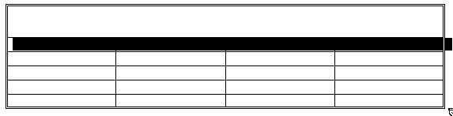
Press Ctrl-B (This on Bold)
Press Ctrl/Shift-> 6 times (This changes the font size to 24 point)
Now type COLEMAN CORPORATION
Select the entire 2nd row
Press Ctrl-E (Center this row)
Press Ctrl-B (Bold this row)
Select cells A3 through A6
Press Ctrl-E (Center these cells)
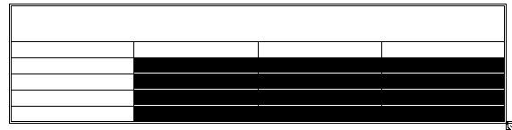
Select cells B3 through D6
Press Ctrl-R (Align Right these cells)
Type in the text as shown in the table below.
|
|
|
|
|
|
|
|
$4,345,563.55
|
|
|
|
|
|
|
|
|
|
|
|
|
|
Position the cursor in cell D3 (the cell below Net Profit).
Click on Table in the Menu Bar, then click on Formula.
In the white box below Formula: delete the formula. Type the following formula: =B3-C3
Click on the down-pointing arrow at the right side of the Number format box and then click the 3rd option from the top.
Press Enter (you can also click OK).
Insert the formula =B4-C4 using steps 12 through 16 in cells except click the 2nd option in the Number format drop-down list.
Insert the formula =B5-C5 using steps 12 through 16 in cells except click the 2nd option in the Number format drop-down list.
Insert the formula =B6-C6 using steps 12 through 16 in cells except click the 2nd option in the Number format drop-down list.
Add outside double border and shading in the 2nd row of the table as shown in the table above.
Open the file: Recalculating a Table
The figures in the Expenses column have changed. Change the table so that the figures in the Expenses column are the same as the table below.
|
|
|
|
|
|
|
|
$4,456,633.43
|
|
|
|
|
|
|
|
|
|
|
|
|
|
Click once in cell D3 (the cell right below Net Profit). Press the F9 key (this key is in the top row of the keyboard). This will recalculate the cells.
Click once in cell D4. Press F9.
Click once in cell D5. Press F9.
Click once in cell D6. Press F9.
The figures in the Net Profit column have be recalculated as shown in the table below.
Working with Columns and Breaks
Type the following heading: TOP 20 BOYS AND GIRLS NAMES
Bold and Center the heading
Click on the Align Left button in the Formatting Tool Bar. Turn off Bold in the Formatting Tool Bar.
Click on Insert. Click on Break. Click on Continuous. Click OK. (You just added a Continuous break).
Click on Format in the menu bar. Click on columns. Click on two. Click OK. (You just added two columns to your page.
Click on Insert. Click on Break. Select Column Break. Click OK. (You just added a Column Break).
Type the list of names in the columns below. Put all the boys' names in the left hand column and put all the girls names in the right hand column. Use the mouse to click back and forth from the left column to right column. Type only one name on each line. Press return after you type each name.
Jacob Emily Madison Michael Hannah Joshua Matthew Ethan
Joseph Emma Alexis Ashley Andrew Abigail Sarah Christopher
Daniel Nicholas Samantha William Anthony Megan Elizabeth David
Tyler Alyssa Lauren Alexander Isabella Ryan Grace Jessica
John Brianna James Zachary Taylor Kayla Brandon Anna
Working With Columns and Breaks Part 2
Type the memo on the next page.
After you type the first paragraph, you have to put in a Continuous Break and insert 2 columns by doing the following:
Click on Insert, then click on Break, then click on Continuous.
Click on the Columns button in the Standard Toolbar and select 2 columns.
After you type the last item in the first column, insert a Column Break. Click on Insert, then Break, then Column Break.
At the end of the 2nd column, Insert a Continuous Break. Click on Insert, then Break, then Continuous Break.
Remove the 2 columns by clicking on the Columns button in the Standard Toolbar and select 1 column.
Add your name to the bottom, save the memo, then print 2 copies.
TO: Intermediate Students
FROM: Bryon Rodan, Principal
The supplies need for all students in the intermediate grades are listed below. Please try to have the supplies on hand by the first day of school. Our first day of school is on
Loose- leaf paper (at least 3 packages)
4 single-subject spiral notebooks (70pages, collage ruled)
Plastic expandable folder with at least 7-12 dividers OR binder with 6, 3-hole punched folders (Many Prefer the zipper nylon binder)
Zipper pencil pouch to fit in binder
Blue, Black, and Red pens (package of each)
Calculator - Texas Instrument - TI-30x-II's
2 boxes of Kleenex (200 count )
Colored pencils or markers
2 Packages of Index Cards (4x6)
For students who will be using a backpack, please remember that all backpacks are to be stored in your locker. Backpacks are not allowed in the classrooms.
Have a great school year!
Using Columns, Breaks, and Page Setup
Click on the File Menu, then select Page Setup.
Set the left and right margins to .8
Type the title of the page. Center, Boldface, Underline it. Increase the font size to 14.
10 Largest Cities According to the 2000 Census.
Select Insert Break, then select Continuous. Click OK.
Click on the Columns button in the Standard Toolbar. Select 3 columns
Click on the Format Menu and select Columns.
Select the box next to Equal Column Width
Change the width of Column 1 to 2.2.
Click OKClick on the Insert Menu, then click on Break, select Column Break.
Click on Insert Menu, then Click on Break, select Column Break.
Click in the first column
Click on the Center Button in the Formatting Toolbar.
Type the chart on the next page. Double space between each line.
Philadelphia, Pennsylvania
Detroit, MichiganPOPULATION
1. Open the file Creating a Header
2. Bold and underline the title: Windows XP Service Pack 2
3. Bold each of these 4 subheadings:
FEATURES OF SERVICE PACK 2
TOP 10 REASONS TO UPGRADE TO WINDOWS XP
THE 3 MOST IMPORTANT THINGS
4. Create a header Windows XP Service Pack 2 that is bolded and prints at the left margin on every page by completing these steps:
5. Click on View and then click on Header and Footer. The Header and Footer toolbar will appear. NOTE: You can move the toolbar by clicking on the gray area and dragging it to another location.
6. In the header pane, turn on Bold and type Windows SP Service Pack2. Press Enter.
7. Click on Print Preview to see how the header will appear on each page when printed.
Open the file Creating a Footer.
Bold and Underline the title: Security Settings in Outlook and Outlook Express
5. Bold the two sub-headings:
CHANGE THE SECURITY SETTINGS IN OUTLOOK EXPRESS
CHANGE THE SECURITY SETTINGS IN OUTLOOK
You will create a footer Security Settings in 12-Point Century Schoolbook Bold that prints at the left margin on every page and Page # (the # represents the page number) in 12 point Century Schoolbook bold that prints at the right margin of every page by completing the following steps.
Click View, then click Header and Footer.
Click the Switch Between Header and Footer button on the Header and Footer toolbar.
This displays the Footer Pane.
Change the font to 12-point Century Schoolbook and bold it.
Type: Page and then press the spacebar once.
Click Insert Page Number button on the Header and Footer toolbar.
Select (highlight) the page number and then change the font to 12-point Century Schoolbook bold
Click the Close button on the Header and Footer toolbar.
View the document in Print Preview.
Inserting Photos Into A Document
Type the title: Aerial Lift Bridge
Bold, center, and underline the title.
Click on Align Left in the Formatting Toolbar.
Insert a Continuous break (Insert, Break, Continuous).
Click on Columns in the Standard Toolbar and insert 2 columns.
Type the story as it appears on the next page.
Add photos to the story by following these directions.
Start Internet Explorer. Go to google.com (When you start Internet Explorer, google should appear since it is the default homepage).
Type the name of the image that you want to find. Click on Google Search.
Click on an image you would like to add to your text.
Click on the image again to see the full size image.
Right-click on the picture and select Save picture as. The picture will be save in the My Pictures folder. Give the picture a name and click Save.
Click the cursor on your Word document in the Task Bar (bottom of the screen) to have your document appear on the screen.
Click the cursor where you want to picture to appear.
Click Insert (menu bar) and click on Picture. Then click on From File.
Find the picture that you saved and double-click on it.
Drag the picture where you want it to go. (You may have to click on Text Wrapping and click on In Front of Text).
Built in 1929-1930, this bridge was designed to carry vehicular and pedestrian over the entrance to Duluth Harbor.
The aerial lift bridge was a compact solution to the problem of getting people and goods from one side to the other while allowing huge ships to also pass through the same patch of space through the same patch of space. Because of urbanization on both sides of the channel, a traditional bridge was not possible as the approaches would have needed to be extremely long, reducing the utility of the structure.
Until the bridge was built, the people of Duluth made do with ferries tin the summer and temporary bridges in the winter when the port was frozen. The bridge, itself, is owned and operated by the City of Duluth, but the land and water surrounding it is the property of the U.S. Army Corps of Engineers.
At it's widest point it is 386 feet and has a maximum height of 227 feet.
KEYBOARD SHORTCUTS
A keyboard shortcut is a way of accomplishing a task using the keyboard instead of the mouse. Keyboard shortcuts are a great way to increase your efficiency and speed in getting your word processing tasks done.
Included in this packet is a list of 250 Microsoft Word keyboard shortcuts. That's mind-boggling!
So how do you remember all these shortcuts? YOU DON'T!!! You just learn and remember the ones that are important to you - that you really like.
Keyboard short cuts can be placed in 3 categories: (1) essential, (2) good but not necessarily essential, and (3) not essential.
So I have made a list of what I consider Essential Shortcuts and another list that I call Good, But Not Essential Shortcuts. The not essential shortcuts are not on these lists - but they are on the complete list of 250 Microsoft Word Shortcuts. Read that list for yourself - who knows - you may find a shortcut there that you think is essential!
You should know all the Essential Shortcuts. They are important to know and to use
You might want to know some (or all) of the Good, But Not Essential Shortcuts. There are some really neat things you can do with these shortcuts.
Try to use these shortcuts - your word processing will be more fun and more efficient.
Formatting Text Shortcuts
Right Justify Text Ctrl-R
Quit Microsoft Word Ctrl-F4
GOOD BUT NON-ESSENTIAL SHORTCUTS
Formatting Text Shortcuts
All Small Caps Ctrl-Shift-K
Double Underline Ctrl-Shift-D
Grow Font 1 Point Size Ctrl+]
Shrink Font 1 point Ctrl+[
Increase font size Ctrl-Shift->
Decrease font size Ctrl-Shift-<
Word Underline Ctrl+Shift-W
Show/Hide Formatting Ctrl-Shift-8
250 Microsoft Word Shortcuts
Control s save to the default folder.
Control c copy selected text
Control x cut selected text
Control v paste from clipboard
Control k insert hyperlink
Additional short cuts keys:
Control d brings you to the font menu
Control f6 switches between documents
Control shift s brings you to the style menu
Control shift f brings you to the font combo box
Control Shift p brings you to a edit box where you can change font size
Alt shift o table of contents entry
Alt o brings you to the format menu
Alt f brings you to the file menu
Alt I brings you to the insert menu
Alt v brings you to the View menu
Alt t brings you to the tool menu
Alt e brings you to the edit menu
F5 find and replace dialog
Control f2 document preview
Apply Heading1 Alt+Ctrl+ 1
Apply Heading2 Alt+Ctrl+ 2
Apply Heading3 Alt+Ctrl+ 3
Apply List Bullet Ctrl+Shift+ L
Column Break Ctrl+Shift+ Enter
Column Select Ctrl+Shift+ F8
Copy Format Ctrl+Shift+ C
Customize Add Menu Shortcut Alt+Ctrl+ =
Customize Keyboard Shortcut Alt+Ctrl+ Num +
Customize Remove Menu Shortcut Alt+Ctrl+ -
Delete Back Word Ctrl+ Backspace
Do Field Click Alt+Shift+ F9
Double Underline Ctrl+Shift+ D
End of Column Alt+Shift+ Page Down
End of Column Alt+ Page Down
End of Doc Extend Ctrl+Shift+ End
End of Document Ctrl+ End
End of Line Extend Shift+ End
End of Row Alt+Shift+ End
End of Window Ctrl+ Page Down
End of Window Extend Ctrl+Shift+ Page Down
Font Size Select Ctrl+Shift+ P
Go to Next Page Alt+Ctrl+ Page Down
Go to Previous Page Alt+Ctrl+ Page Up
Goto Annotation Scope Alt+ F11
Grow Font One Point Ctrl+ ]
Header Footer Link Alt+Shift+ R
Mark Citation Alt+Shift+ I
Mark Index Entry Alt+Shift+ X
Mark Table of Contents Entry Alt+Shift+ O
Microsoft System Info Alt+Ctrl+ F1
Next Object Alt+ Down arrow
Normal Style Alt+Shift+ Num 5
Normal Style Ctrl+Shift+ N
Open or Close Up Para Ctrl+ 0
Outline Collapse Alt+Shift+ Num -
Outline Collapse Alt+Shift+ -
Outline Demote Alt+Shift+ Right arrow
Outline Expand Alt+Shift+ Num +
Outline Expand Alt+Shift+ =
Outline Move Down Alt+Shift+ Down arrow
Outline Move Up Alt+Shift+ Up arrow
Outline Promote Alt+Shift+ Left arrow
Outline Show First Line Alt+Shift+ L
Page Down Extend Shift+ Page Down
Page Up Extend Shift+ Page Up
Para Down Ctrl+ Down arrow
Para Down Extend Ctrl+Shift+ Down arrow
Para Up Extend Ctrl+Shift+ Up arrow
Paste Format Ctrl+Shift+ V
Prev Object Alt+ Up arrow
Prev Window Ctrl+Shift+ F6
Prev Window Alt+Shift+ F6
Print Preview Alt+Ctrl+ I
Redo Alt+Shift+ Backspace
Redo or Repeat Alt+ Enter
Show All Headings Alt+Shift+ A
Show Heading1 Alt+Shift+ 1
Show Heading2 Alt+Shift+ 2
Show Heading3 Alt+Shift+ 3
Show Heading4 Alt+Shift+ 4
Show Heading5 Alt+Shift+ 5
Show Heading6 Alt+Shift+ 6
Show Heading7 Alt+Shift+ 7
Show Heading8 Alt+Shift+ 8
Show Heading9 Alt+Shift+ 9
Shrink Font Ctrl+Shift+ ,
Shrink Font One Point Ctrl+
Shrink Selection Shift+ F8
Start of Column Alt+Shift+ Page Up
Start of Column Alt+ Page Up
Start of Doc Extend Ctrl+Shift+ Home
Start of Document Ctrl+ Home
Start of Line Extend Shift+ Home
Start of Row Alt+Shift+ Home
Start of Window Ctrl+ Page Up
Start of Window Extend Ctrl+Shift+ Page Up
Superscript Ctrl+Shift+ =
Symbol Font Ctrl+Shift+ Q
Toggle Field Display Shift+ F9
Unlink Fields Ctrl+Shift+ F9
Unlock Fields Ctrl+Shift+ F11
Update Auto Format Alt+Ctrl+ U
Update Fields Alt+Shift+ U
Update Source Ctrl+Shift+ F7
Word Left Ctrl+ Left Arrow
Word Left Alt+ Left arrow
Word Left Extend Ctrl+Shift+ Left arrow
Word Right Ctrl+ Right arrow
Word Right Alt+ Right arrow
Word Right Extend Ctrl+Shift+ Right arrow
Word Underline Ctrl+Shift+ W
(OK - So Some of them are Useless)
NEAT TRICK #1 - A SMILEY FACE
Try this in a new Word Document. Press Shift + : Then press Shift + )
OK - so we did the useless one first?
This trick works with Microsoft Word 2000. (I'm not sure about earlier versions - it doesn't work with Microsoft Word XP).
There is a neat font called Smiley Face if you want it, it is on the floppy disk.
Here are some samples of some of the smiley faces in this font.
If you want to use the font, you need to drag the font from the floppy disk into your Fonts folder which is on your hard drive. The Fonts folder is located in the Windows folder (or Win NT folder, depending which operating system you are using) in your hard drive (local disk c)
NEAT TRICK #2 - CHANGE CASE QUICKLY
Did you ever type some text and you realized your caps lock was down (or vice versa). (“Oh no, I have to delete the text and type it again - RATS!!!”) No you don't!!!
Just highlight the text and press SHIFT +F3 (that's the F3 key at the very top of the keyboard).
OK - so try it. Type some text in all caps, select it (highlight it) and press SHIFT + F3. You may need to press SHIFT +F3 to get the desired result you want.
NEAT TRICK #3 - SAVE A WORD DOCUMENT AS A WEB PAGE
Did you have want to send a friend a Word document you created but you know that they don't have Microsoft Word (or maybe you don't know and don't want to take a chance). Well, here's how to solve that problem.
Create your document in Word. When you are ready to save it, click on the File menu and then select Save As Web Page. That's it! You have created a webpage out of your document. You can send anyone that webpage document and they will be able to open it with their web browser (Internet Explorer or Netscape). Everyone has a web browser!!!
If you want to include pictures (and you can), when you save your document, a special folder is created with the pictures in it. When you send the webpage attachment, be sure to send the folder with the pictures in it. Otherwise, they will be able to read the text, but won't see the pictures.
Try this little trick - it's a good thing! (Been watching a little to much Martha Stewart lately)
NEAT TRICK #4 - NONBREAKING SPACE BETWEEN WORDSWhen you type a proper name such as "John Smith" near the end of a line in Word 2000, Word may separate the words, putting "John" at the end of one line and "Smith" at the beginning of the next line.
To keep words together on the same line, insert a nonbreaking space between them. For example, type John, enter a nonbreaking space by pressing CTRL+SHIFT+SPACEBAR, and then type Smith.
I always have trouble when writing the name of my cousin, Francisco Javier Torres de Silva López de Letona. (Just kidding, that's not my cousin - I made that name up - but I used the nonbreaking space to keep the name all on one line. Neat!)
Try it - create a new Word Document and type the paragraph above with the long name. (Actually, type just the first 2 lines).
When you are finished, click on the Show/Hide button in the Standard Toolbar (or press CTRL + SHIFT + *). Do you see the little º marks between each of the names - that's it - the nonbreaking space mark.
This trick works with older or newer versions of Microsoft Word.
I know you can't live without this Neat Trick!
NEAT TRICK #5 - A QUICK PAGE BREAK
When you are tying a document and you want to skip to the next page, you need to put in a page break. Well, you can do that by clicking on Insert, Break, Page Break, and OK. That's 4 clicks and a lot of mouse movement. Well, the neat thing is to press CTRL + Enter when you want to start at the top of a new page in your document. What could be easier!
Try it. Start a new document.
Type: This is the stuff on Page1. Press CTRL + Enter.
Type: This is the stuff on Page2. Press CTRL + Enter.
Type: This is the stuff on Page3. Press CTRL + Enter.
Notice, each time you press CTRL + Enter, you start at the top of the next page.
Ha - I just pressed CTRL + Enter and here I am at the top of Page 3 in my document.
NEAT TRICK #6 - CLOSE/SAVE ALL
Are you ever working on several documents at the save time (I always am - like right now). Well, you can save all open Word documents at once or you can close all word documents at once.
Just hold down the SHIFT key as you click the File menu, and then click Close All or Save All. Be sure you press and hold down the SHIFT key before you click on the File menu.
Note: If you decide to close all documents at once (Shift + File Menu + Close All), Word will give you the opportunity to save any of the documents that haven't been save yet.
NEAT TRICK #7 - IMBED A LINK
Did you know you could embed an internet link (website address) right in your Word Document.
Type your document in word and just type in the website address wherever you want it. Whoever reads the file can then click on the website address and go to that site. Of course, the person has to have a live connection to the internet. NOTE: When you click on the website, you must hold down the
OK, let's try it. Create a new document saying something about the neat organization you work for (Marshall Adult Learning Center). Write that you can check out the website and type the address. NOTE: You must use the complete address, e.g., http://marshalladulteducation.org.
Now hold down the CTRL key and click on the website address. Did it work???
You can use this Neat Trick in conjunction with Neat Trick #3. Send your webpage document with the website address to a friend - they won't have to hold down the CTRL key to go to the website - they just have to click on the address.
NEAT TRICK #8 - CLOSE ALL IN THE TASK BAR
OK - This is not an exclusively Microsoft Word Trick, but it's kinda cool, so I had to include it. When you open files, folders, programs, etc, your task bar gets pretty crowded. When you are finished working with some or all of the items in your Task Bar, you can close all of them or as many of them as you want with a few simple clicks.
Try this. Open up 5 things - any 5 things - a few folders, a couple programs…whatever. Now hold down the CTRL key and click on 4 of the items in the task bar that you want to close (leave one open). Now, right-click on the any one of those items. A pop-up menu appears - left-click on Close. Wah-la - those 4 items close leaving only the one item in the task bar.
Notice, there are other options in that pop-up menu. I particularly like the Tile Vertically, since I frequently work with 2 or more folder windows at a time.
Well, you think you'll ever use this tip - or is it useless??? (I use it all the time! Of course, I'm a geek!)
NEAT TRICK #9 - WHAT'S THIS
What's This? Ever seen that before? It is located in Help in the menu bar. If you want information about anything in Microsoft, this is a great way to get it fast!
Try it. First be sure that your ruler is visible. If it is not, Click on View in the menu bar and then click on Ruler.
Now, click on Help in the File Menu and select What's This. Notice that your cursor turns into an arrow with a question mark.
Now click on the ruler. You get a nice little explanation of what the ruler is and how to use it.
ry this one. Click on Help in the File Menu and select What's This. Now click on the format menu and click on Drop Cap. There it is - a nice explanation of what a drop cap is (Have you ever used a drop-cap before. BTW, I used a drop cap in this paragraph. Can you tell???
You can also use What's This to get information in your text. Click on some text in a document and see what it says.
One more thing - there is even a keyboard shortcut to What's This. Press Shift-F1. Try it! Very Cool!
NEAT TRICK #10 - CLICK AND TYPE
You can place the insertion point at any place in the document by doubling clicking. Depending on where you double-click will depend on how the text is aligned.
Try This. Press ALT + N (this creates a new document). Be sure you are in Page Layout view. Double click about half way down the page just inside the left hand margin. Type a few words. (See - it works!)
Try This. Press CTRL + A (this selects all the text). Press CTRL + X (this Deletes all the text). And this time double click about half way down the sheet right in the middle of the page. Type a few words. This time, your text is centered on the page.
Try this. Press CTRL + A (this selects all the text). Press CTRL + X (this Deletes all the text). And this time double click about half way down the sheet but to the right of the right text boundary. Type a few words. This time, your text is justified along the right hand margin.
As you move your cursor around the blank document, notice how the cursor changes. This is how you determine how your text will be formatted when you double click the mouse. The chart below shows you how the text will be entered on the page
Cool! Don't forget to close the new document you just created - don't save it.

NEAT TRICK #11 - ZOOM
The Zoom arrow in the Standard Formatting bar is a way you can zoom (change the size of the page view). Click on the down arrow and see the various degrees you can “zoom” to.
There is a really neat way to zoom that is much more convenient that clicking on the Zoom button in the Standard Formatting bar. Here's how: Hold the Ctrl Button down and turn the scroll wheel on the mouse - slowly - either up or down. And watch the screen automatically zoom. Very Cool!!!
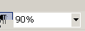
NEAT TRICK #12 - SORT TEXT
Have a list of word you want to sort (alphabetize). Select (hold the mouse button down and drag over them) the words, then select Sort from the Tables menu. A dialog box will open. Select whether you want the list of words sorted in ascending order (A to Z) or descending order (Z to A).
There are actually 2 ways to delete text from your document. One is with the BACKSPACE key and one is with the DELETE key.
The Backspace key. Position the cursor to the right of the text you want to delete and press Backspace as many times as needed to delete the text. (You may also hold down the Backspace key).
The Delete Key. Position the cursor to the left of the test you want to delete and press Delete as many times as needed to delete the text. (You may also hold down the Delete key).
When to use SAVE and when to use SAVE AS
…You are saving your file for the first time.
…You have saved your file already but you want to save under a different name.
…You have saved your file already by you want to save it in a different location.
…You have already saved your file (and given it a name) and you have made changes to
it,
On a more modern mouse, you have a scroll wheel in between the 2 buttons. Turn the scroll upward or downward to scroll the text on the screen. It is more convenient to use the scroll wheel than clicking on the up and down arrows on the top and bottom of the vertical scroll bar.
If you don't have a mouse with a scroll wheel, go buy one - you'll be glad you did!
Insert Mode and Overstrike Mode
When you are typing in Insert mode, any text that you type is inserted into your document. For example, if you type a paragraph and you want to add some words in the middle of the paragraph, you click in the middle of the paragraph and start to type. The new text is inserted into the paragraph moving all the text in front of it to the right as you type.
You can place the keyboard into overstrike mode so that when you type, the new text that you type will overstrike (or replace) any text in front of it (to the right).
You almost always want to be in Insert mode. There are 2 ways to tell whether you are in Insert mode or Overstrike mode. (1) There is a light on the keyboard that lights up when you are in Insert mode. (2) When you are in Overstrike mode, the letters OVR in the become boldface in the status bar at the bottom of the screen.
How To Save A File On A Floppy Disk
Click on the File, then click on Save As
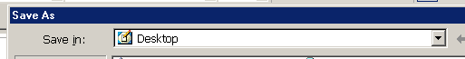
Click on the down-pointing arrow next to the Save In box
Click on 3 ½ Floppy (A:)
Your floppy disk will spin and the
your Save in box will say:
Give your file a name and click on SAVE (lower right hand corner).
How To Save On The Computer Hard Drive.
Click on the File menu, the click on Save As
Click on the down-pointing arrow next to the Save In box
Choose the location that you want to save in,
- If you want to save in the My Documents folder, click on
My Documents. (If you want to save it in a special
folder in the My Documents folder, double-click
on that folder).
- If you want to save on the Desktop, click on the
Desktop icon
(If you want to save it in a special folder on the
Desktop, double click on that folder).
Give the file a name and click on SAVE.
How to Open a File on a Floppy Disk
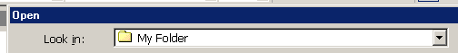
Click on the File menu, then click on Open.
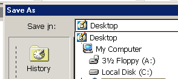
Click on the down-pointing arrow to the right of the Look In box.
Click on the file you want to open and click on Open. (You may also double-click on the file to immediately open it).
Two Features in Word You Want to Use.
Microsoft Word is set to only show a partial list of items in the drop-down menus. What a pain! You can correct this and have the full list of menu items show when you click on a menu item.
Click on Tools, then click on Customize.
Click on the Options tab.
Click on the box next to Always show full menus. (It should be checked)
Click on a drop-down menu and you will now see all the menu items.
If you like to use Print View (see What Page View Should I Use on page 5), you will want to be able to see the page borders
Click on the Tools menu, then click on Options.
In the Print and Web Layout Options, click on the box next to Text Boundaries (it should be checked.
Click OK. You will now see the page borders when you are in Print View.
Picture of Aerial Lift Bridge
Large Picture of Lift Bridge